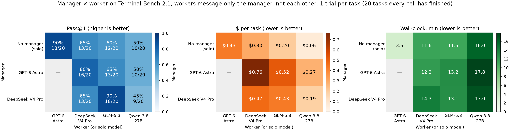
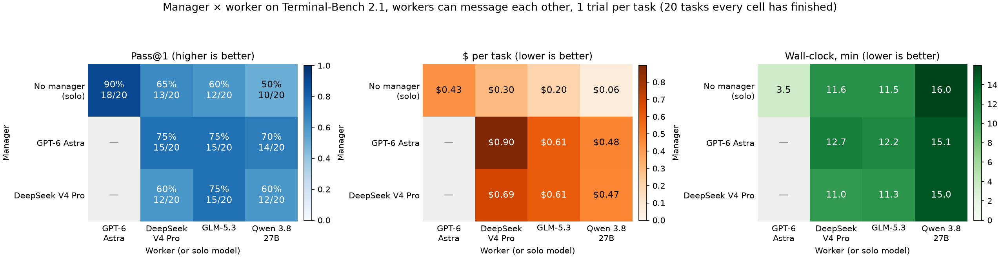
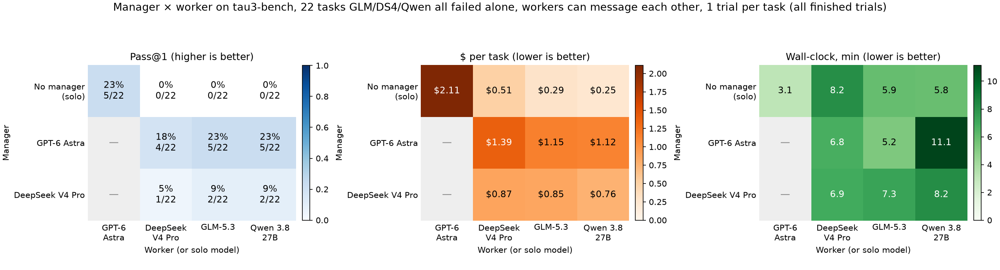
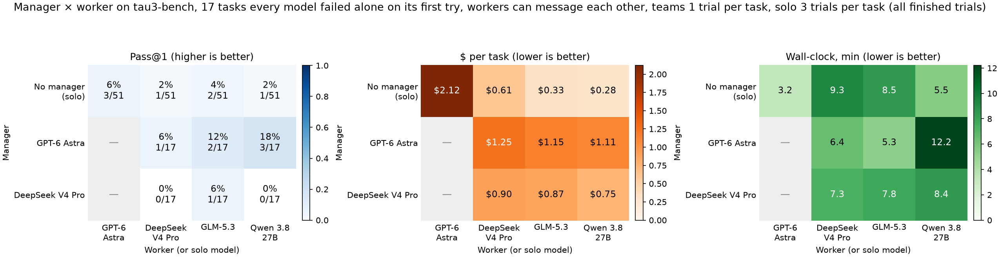

Terminal-Bench 2.1 · tau3-bench · 1 trial per task
Manager × worker teams
Each cell is one setup: a manager model (rows) running a team of worker models (columns). The top row has no manager: the column's model works alone. The page has two grids, one per communication setup. Hover a cell for counts and per-task results.
Star: workers talk only to the manager
6 Oct 2026complete
Workers could post only to the manager and saw only messages addressed to them. They could not message each other.
Terminal-Bench 2.1 · 20 tasks

Terminal-Bench 2.1, workers can message only the manager, not each other. Static matplotlib version of the star grid above (tasks every cell has finished), from analysis/plot_heatmap.py.
Not star: workers can message each other
7 Oct 2026__W2W_PROGRESS__
Same 20 tasks and the same six team setups, with one change: workers can send each other direct messages, which the manager does not see (w2w_private). The fix for the review deadlock found on 7 Oct is in. The solo row repeats the 6 Oct solo runs, which have no teammates.
Weak workers gained the most from messaging each other. Compared with star, Qwen 3.8 27B teams rose from 10 to 14 of 20 under GPT-6 Astra and from 9 to 12 under DeepSeek V4 Pro, and GPT-6 Astra + GLM-5.3 rose from 13 to 15. Every Qwen team now beats Qwen alone (10 of 20).
No team beat GPT-6 Astra alone (18 of 20, $0.43, 3.5 min). The best teams reached 15 of 20. DeepSeek V4 Pro + GLM-5.3 fell from 18 to 15, losing db-wal-recovery, polyglot-rust-c and sqlite-with-gcov. With one trial per task, changes of 1–3 tasks may be noise.
Every team cost more than its star version: $0.47–0.90 per task here vs $0.19–0.76 under star, $74.85 for all 120 trials. Workers messaged each other in 7–12 of the 20 trials per cell. Teams under GPT-6 Astra sent more of these messages (30–45 per cell) than teams under DeepSeek V4 Pro (11–18). Star wall-clock times include the review deadlock, so wall-clock is not comparable across the two grids.
Terminal-Bench 2.1 · 20 tasks

Static matplotlib version of the grid above, from analysis/plot_heatmap.py --w2w.
tau3-bench: solo screen for hard tasks
7 Oct 2026screen completeteams not started
Customer-service tasks: the agent serves a simulated customer (gpt-5.2) through the task's tools, and the grader gives 0 or 1. To find tasks worth giving to teams, three models first ran alone on 100 tasks (35 airline, 35 banking_knowledge, 30 telecom), one trial each, with no errors.
GLM-5.3 did best alone (71 of 100), ahead of Qwen 3.8 27B (69) and DeepSeek V4 Pro (64). DeepSeek also cost the most.
Banking_knowledge is the hard domain. Every model passed 7–11 of 35 there, versus 28–31 of 35 on airline and 28–29 of 30 on telecom.
22 tasks failed for all three models: 3 airline and 19 banking_knowledge. They are the candidate hard set. The team grid below runs on all 22, with GPT-6 Astra alone as the strong solo baseline.
$ / task is the agent's model spend only; the simulated customer adds about $0.01 per trial. Before the screen, a 2-task test (airline-7, one banking task) gave 1 of 2 for each team (GPT-6 Astra or DeepSeek V4 Pro managing GLM-5.3 workers who can message each other), the same as GLM-5.3, Qwen 3.8 27B and GPT-6 Astra alone.
tau3-bench teams on the 22 hard tasks: workers can message each other
7 Oct 2026__TAU_PROGRESS__
The same six team setups as the Terminal-Bench grids, with workers able to message each other (w2w_private), on the 22 tasks that GLM-5.3, DeepSeek V4 Pro and Qwen 3.8 27B all failed alone. Only the manager talks to the customer; workers have the tools that look up and change records. Each team gets the task's full 60 minutes and at most $5 per trial. The solo row for GLM-5.3, DeepSeek V4 Pro and Qwen 3.8 27B is the screen above, so it is 0 by construction; GPT-6 Astra alone runs on the same 22 tasks (started 7 Oct 19:12 UTC, same 60-minute and $5 limits). All 132 team trials and 22 GPT-6 Astra solo trials finished with no errors and no timeouts.
No team beat GPT-6 Astra alone on the 22 tasks. GPT-6 Astra alone passed 5 of 22 ($2.11 per task). Teams it managed passed 4–5 of 22 ($1.12–1.39), and teams DeepSeek V4 Pro managed passed 1–2 ($0.76–0.87).
On the 17 tasks every model failed alone, repeat solo trials explain most team passes. Teams passed 7 of 102 trials there (5 tasks). Two more solo trials per model then passed 7 of 136: GPT-6 Astra 3 of 51 (banking 003 once, 028 twice), GLM-5.3 2 of 51 (041, 071), DeepSeek V4 Pro and Qwen 3.8 27B 1 of 51 each (071). Only banking 005 and 054 stayed team-only, one team pass each. The best team, GPT-6 Astra + Qwen 3.8 27B (3 of 17, 18%), is not reliably above GPT-6 Astra alone (3 of 51, 6%; one-sided Fisher p = 0.16); GPT-6 Astra-managed teams together are 6 of 51 (p = 0.24).
Teams covered every task GPT-6 Astra solved alone on its first try. Each of the 5 tasks GPT-6 Astra passed alone (airline-29, banking 018, 070, 075, 081) was also passed by at least one team. Across all six teams 10 of the 22 tasks were solved at least once, but that pools six chances per task against one per solo model.
Cost: $135.12 for the 132 team trials, $46.40 for GPT-6 Astra alone on the 22 tasks, and $115.24 for the 136 repeat solo trials on the 17 tasks ($72.20 of it GPT-6 Astra).

tau3-bench, 22 hard tasks, workers can message each other. Static matplotlib version of the grid above, from analysis/plot_heatmap.py --tau --all.

The same grid, only on the 17 tau3-bench tasks that every model failed on its first solo trial, GPT-6 Astra included. Team cells are one trial per task (17 trials); solo cells add two repeat trials per task (51 trials), so a solo pass here is a second- or third-try pass. From analysis/plot_heatmap.py --tau --all --allfail.Table view
How to read this
Pass@1 is the share of tasks passed with a single trial. $ / task is mean model spend per trial (manager plus all workers). Wall-clock is mean agent run time in minutes, excluding container setup and grading.
Every cell is one trial per task, so a difference of one or two tasks is within noise.
The GPT-6 Astra manager row mixes two prompts: the original 10 tasks ran before the "only give feedback, not the solution" rule was added; the new 10 ran with it. The DeepSeek V4 Pro manager ran every task with the rule, but often ignored it and dictated exact fixes.
Teams let the manager choose 1 to 4 workers. The manager cannot run commands itself.
path-tracing leaves its original renderer binary in the task container; every setup that passed it disassembled that binary.
Star data: 10_05/runs/*_tb21_2026-10-06__{20-04-01,20-25-46,22-45-33}, __NTRIALS__ trials. Workers-can-message data: 10_05/runs/*_w2w_private-*_tb21_2026-10-07__05-45-35, __NW2W__ team trials finished. tau3-bench screen: 10_05/runs/solo-{glm,qwen27,ds4}_tau3_2026-10-07__06-20-57, 300 trials. Updated __UPDATED__.